context-demo-group-actual-empty · 1440×900
MAPPED — 空搜索、三列表头、零派生标签正文与无独立空分组说明完整，无遮挡；12个原环境仅未分组。只映射原非空分组列表容器，不证明创建空分组实体或原归属业务。
同类参考容器：group-list；不是同名原商业执行。

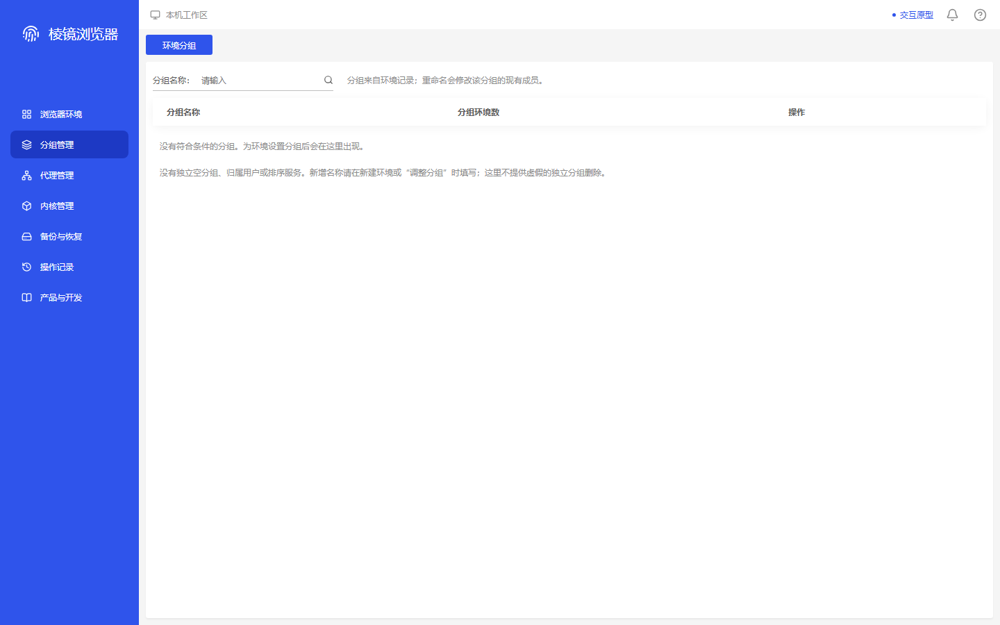
14f3dddbecf7575b35f162011ea20c2240503bc4eea4be07c4f388da385d7487
本包逐图公开合成界面、准确来源及独立结论。ADAPTED是明确适配；MAPPED是同类容器；MISSING是缺直接原参考；FAIL保留可见问题。拍图/并包完整不等于严格全产品1:1，也不证明真实桌面。旧图、旧失败和旧源码身份不倒改；修复须另看新来源。
拍图源码 340a22c1e8489fad2db091a25bb14bb7d2e66984；渲染 SHA 0df5a445b4a16f1984f2944ac7367d1202322b892876f2d31b9e853d9a8708ce。
20张已逐图审查：ADAPTED 0 / MAPPED 18 / MISSING 0 / FAIL 2。0个预定图位尚无PNG；0项历史取证失败保留。
旧346图 · 修复前24图及2 FAIL · 来源、守卫、几何和每图结论 · 继续补核结果
MAPPED — 空搜索、三列表头、零派生标签正文与无独立空分组说明完整，无遮挡；12个原环境仅未分组。只映射原非空分组列表容器，不证明创建空分组实体或原归属业务。
同类参考容器：group-list；不是同名原商业执行。

14f3dddbecf7575b35f162011ea20c2240503bc4eea4be07c4f388da385d7487
MAPPED — 五成员说明、灰化输入/关闭/取消/应用、完整footer及单遮罩可见；窗口500×339.859。照片仅原第一项reply持有时busy；拍后一次释放与五保存是保存动作metadata，没有额外PNG。原分组实体窗口仅容器映射，不是全组改名或原生验收。
同类参考容器：group-edit；不是同名原商业执行。
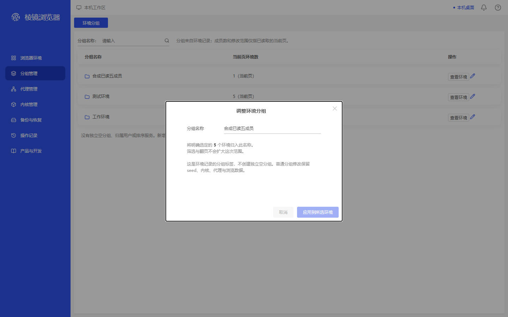
e248c59f5300533b571f8233f0ee5c6f1ec704d96495378f61d93eb8f50c626f
MAPPED — 五条逐项结果、4成功/1失败、一次红色提示、失败重试入口及当前页4/5/1分组计数完整可读；无模态遮罩。仅已读成员1/3/5/7/9，5失败；页外11未更新为保存合成proof，未提交重试。原分组列表容器映射，不是全组或真实写盘验收。
同类参考容器：group-list；不是同名原商业执行。
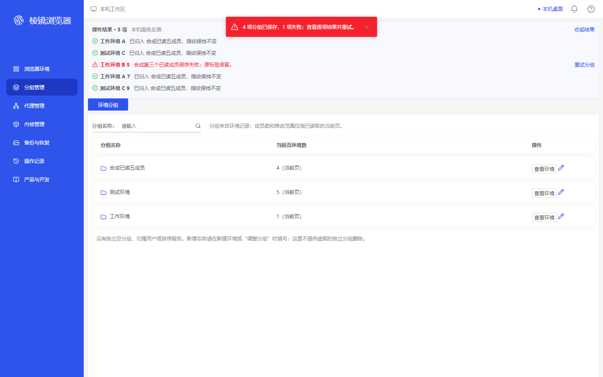
0b9ff4f28db041e0c7298bf57e9146af31a40726aebcabd631c536d3ca9407b2
FAIL — 错误提示末行字形下缘被正文底边裁切，不能作为完整拒绝提示图证；正文0/651/628，尚有23px可滚范围。PROXY_INVALID、字节限制、用户名255/密码256字节、双掩码输入与完整footer仍可见。仅本图可读性FAIL；两次有限服务拒绝不是UI提交前拦截，不推断源码回归。
同类参考容器：proxy-edit；不是同名原商业执行。
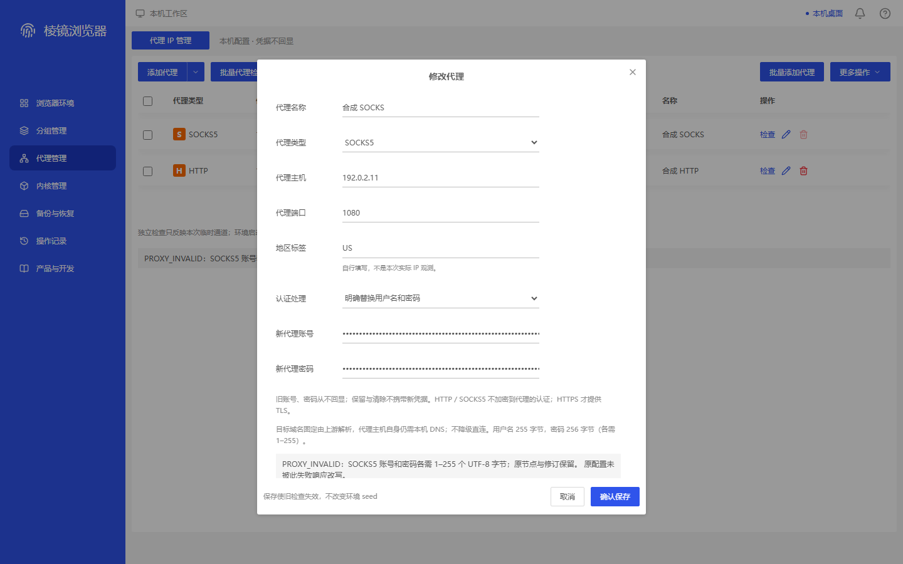
b4b8d892bce4f8746f25109902eb3346471e8bf9df7f4ced504f8a828406b752
MAPPED — 400×505前景的准备切换目录、备份已核对/试用全树退出已确认/配置尚未提交、报告换行及保留原状态/关闭均完整；单有效遮罩。原stop、真实勾选确认与commit命令后为running/prepared，不是ready或completed+uncommitted。原批次400宽容器映射，非真实迁移完成。
同类参考容器：batch-progress-fixture；不是同名原商业执行。
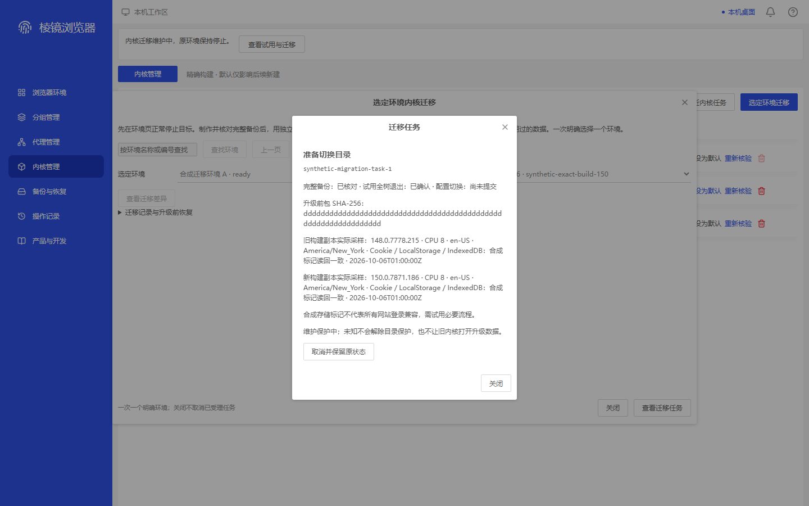
4a104134c590f8f0748ebbb82b4974c948a64039ebd9c34d0d7ba03bfa84e764
MAPPED — 空搜索、创建/导入、五列表头、零结果正文/分页与演示能力说明完整，无遮挡；保存快照确为零。与非匹配状态相同仅empty-body，搜索输入条件不同。原代理列表仅容器映射，不是原备份业务或原生备份验收。
同类参考容器：proxy-list；不是同名原商业执行。
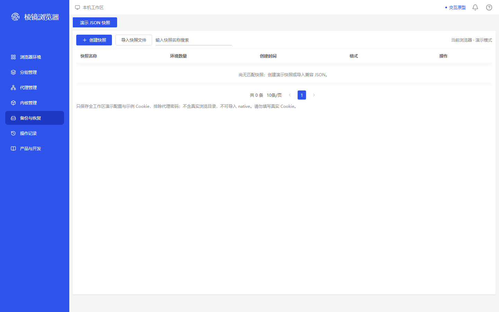
badbb82bc1f768870ce88a1183a7ba2f3dfdb000fbf9ae58371424ad02930452
MAPPED — 非匹配搜索值与焦点边框可见，零结果正文/分页和演示说明完整；保存快照数为1，不是记录被删除。只有empty-body与真正空列表相同，toolbar/search与整页不等价。原代理列表仅容器映射，不扩展为恢复或原生验收。
同类参考容器：proxy-list；不是同名原商业执行。
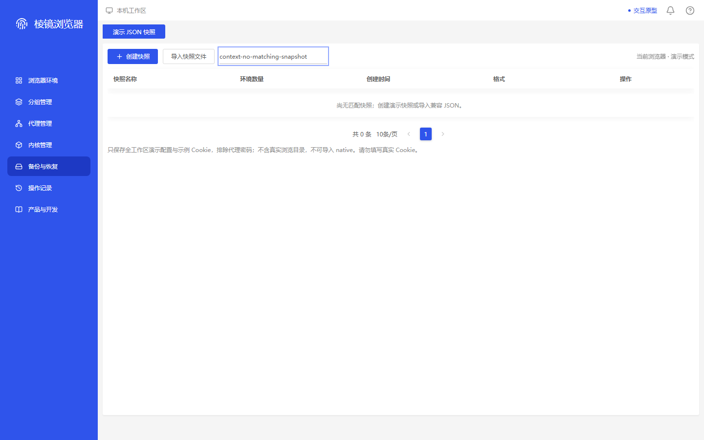
e5852fa72fc097929b503fd49adec110f720ad2846ac50e5fafdfdcab8a4e3a7
MAPPED — 已发布备份选中、导出任务未选中、搜索为空；无已发布完整备份、零条分页与本机完整包边界说明完整。不是导出任务空态，没有导出/发布/恢复效果证明。仅原代理列表容器映射，非真实原生能力验收。
同类参考容器：proxy-list；不是同名原商业执行。
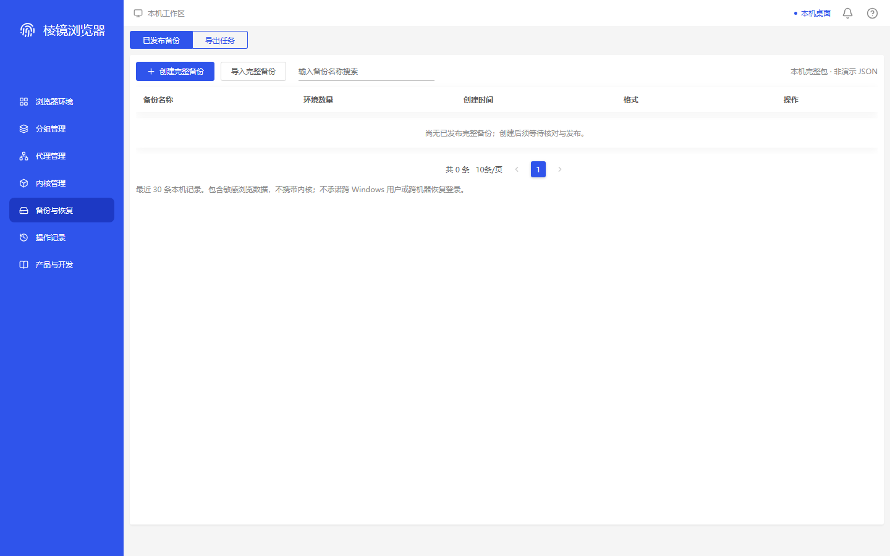
5ae36336c29900cdba3adf9a63ddef34267796e74dc60b2bfb2e6f2acf466b74
MAPPED — 普通记录页顶部空搜索/全部结果、一条原合成记录、未确认完成标签、诊断入口与完整分页可见，无前景遮挡；40px表头/48px行保留。不是密集末页、详情或诊断尾部图，原日志容器映射不证明原生动作已完成。
同类参考容器：activity-list；不是同名原商业执行。
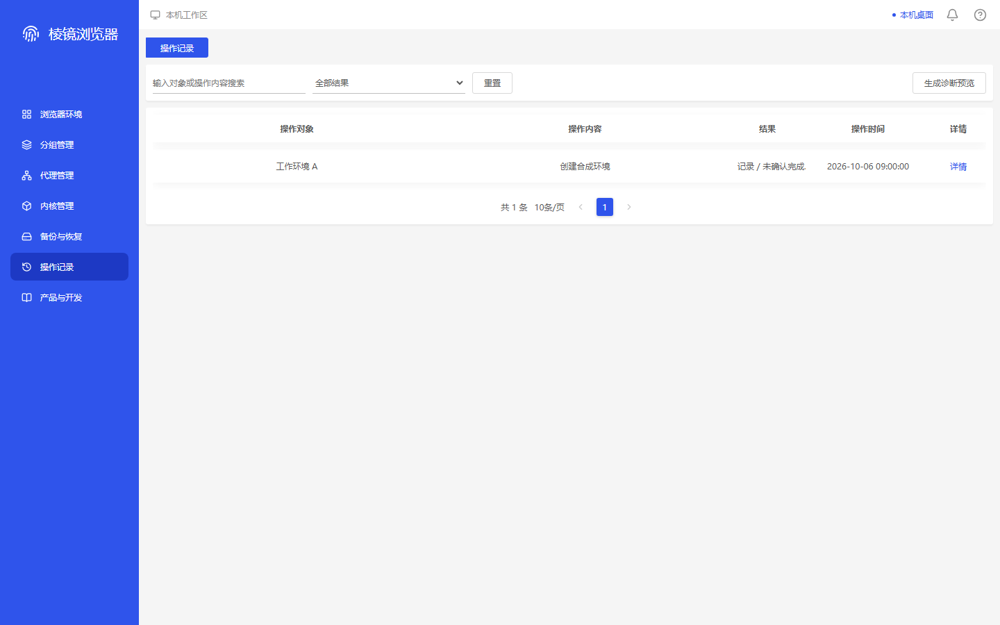
794845b56ee165f2abef85ac1c3582b9d1958f86fdcd49e07756ea606f7aae42
MAPPED — 一次绿色环境列表已刷新提示与关闭控件清晰；首工具条部分被短暂覆盖，常规行和完整页脚保留。表体仍在顶部0/590/582，页脚仍有正在读取分页文字，不作密集底部或分页终态证明。原环境容器映射；错误提示共用分组mixed，不是Windows通知。
同类参考容器：environment-list；不是同名原商业执行。
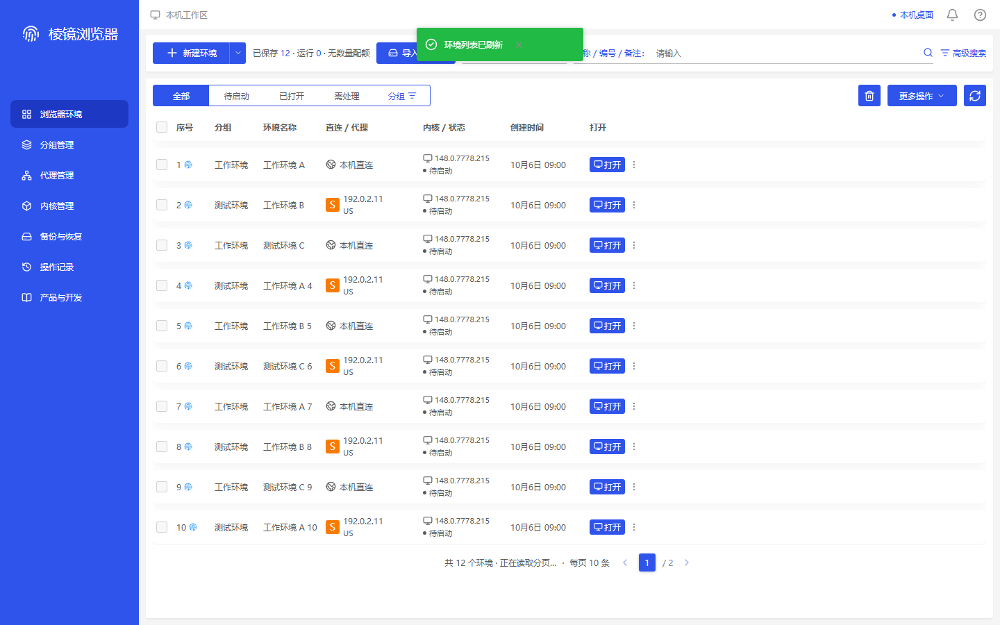
34e56841950f6810dbcd40efbcb318a737ee90806b8ded658a4db82de6317b90
MAPPED — 1280视口下空搜索、三列表头、零派生标签正文及无独立空分组说明完整，无横向裁切；12个原环境仅未分组。原非空分组列表仅容器映射，不证明独立空分组或原归属/排序业务。
同类参考容器：group-list；不是同名原商业执行。
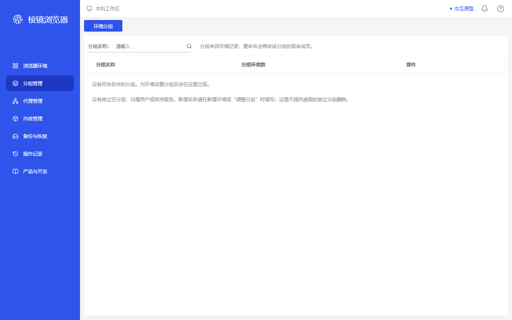
4561848ce59cf9edd6d586fe9e5efe7b52510949ec08467b2534bf8c2dd3365b
MAPPED — 500×339.859五成员窗口与51px footer完整，灰化字段/关闭/取消/应用和单遮罩可见。照片仅第一项原reply被持有；拍后释放一次与五项保存只有动作metadata，没有第二张保存PNG。仅原分组窗口容器映射，不能认证全组、键盘或真实保存。
同类参考容器：group-edit；不是同名原商业执行。
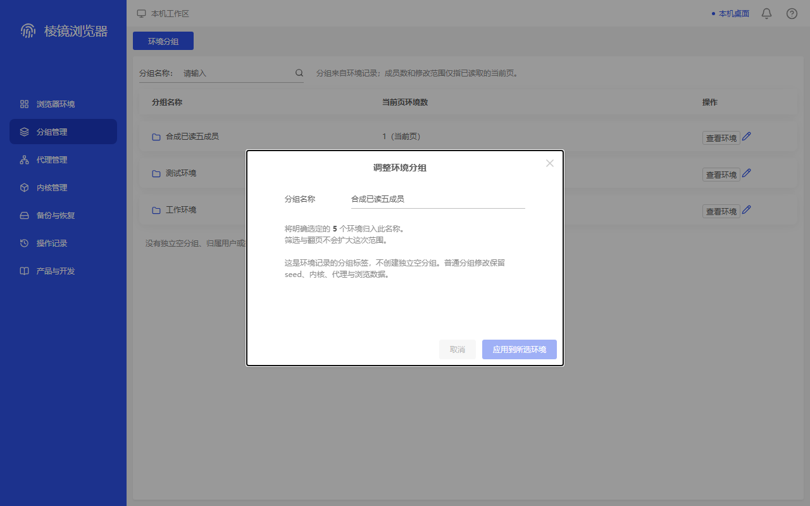
f83360101c49ce501fcf968d4cdfe6a86beddd6ee19458c2fb6e7d1c0c3cf85e
MAPPED — 1280下五条逐项结果、4成功/1失败、一次红色提示和失败重试入口完整，当前页4/5/1计数及说明可读。范围仅已读1/3/5/7/9且5失败；页外11未更新/身份保留是保存合成proof，未提交重试。原分组容器映射，非全组或原生持久化验收。
同类参考容器：group-list；不是同名原商业执行。
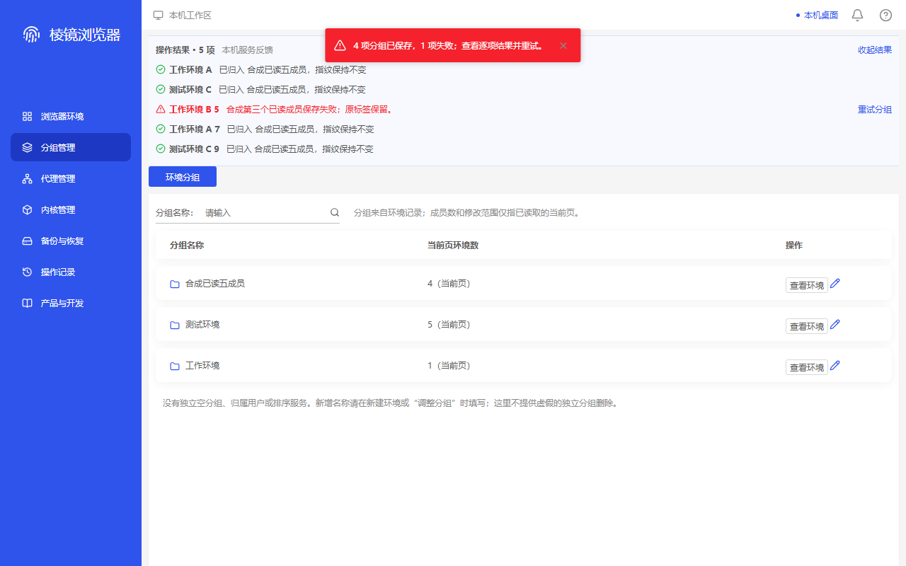
a3ed9702d366feea6623ae30a894cb8a500c9c077547aa12f94424e2b37cb17f
FAIL — 正文底边裁切错误提示末行的字形下缘；0/651/628仍有23px可滚范围，不能作为完整拒绝提示图证。主要PROXY_INVALID、用户名255/密码256字节、双password掩码与取消/保存footer可见。仅该捕获可读性FAIL，不声称用户无法滚动；UI确实dispatch两次服务请求，非提交前拦截或源码回归。
同类参考容器：proxy-edit；不是同名原商业执行。
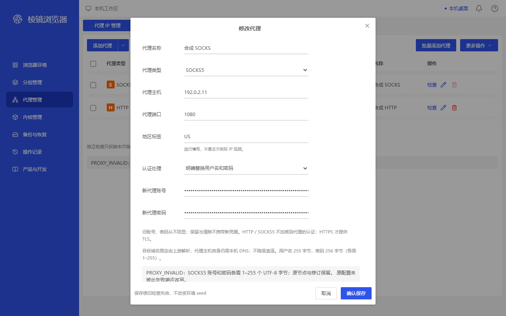
b6be7593d6b8e88f3ac3b4a55f3b25b41a32a26a41e4130a97e5c08c6700a56e
MAPPED — 1280下400×505报告自然高度完整，准备切换目录与备份已核对/试用退出已确认/配置尚未提交、长报告换行及footer可读；单有效遮罩。原stop/勾选确认/commit后为running/prepared，不是ready、completed+uncommitted或真实切换完成。原批次仅400宽容器映射。
同类参考容器：batch-progress-fixture；不是同名原商业执行。
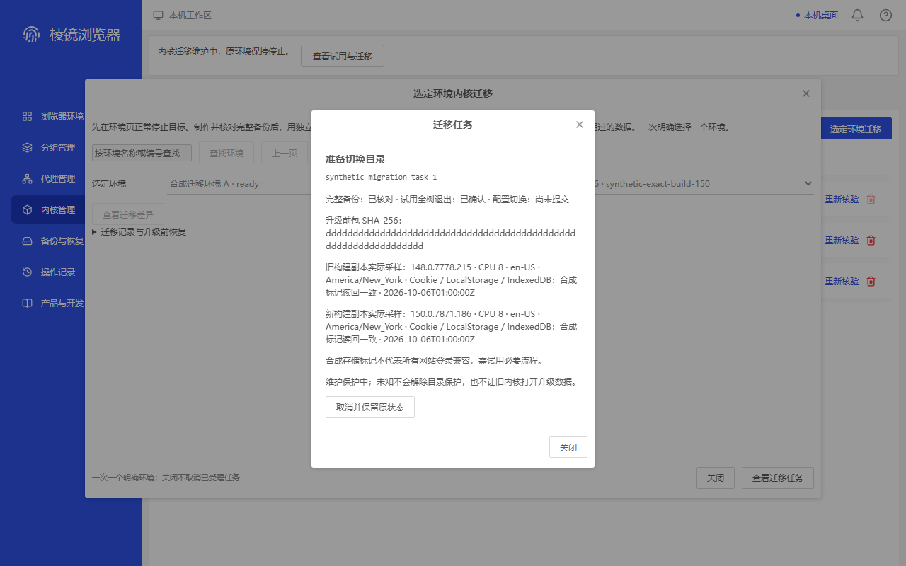
4d6726eb90765e1192add41e55b1b01b0b00b1041707d438f93e605f97aa2121
MAPPED — 1280下真正零快照、空搜索、创建/导入、五列表头、空正文/零条分页和演示边界说明完整；32px输入与40px表头保留。与非匹配状态相同仅empty-body，不是整页/搜索等价。原代理列表仅容器映射，无原生备份结论。
同类参考容器：proxy-list；不是同名原商业执行。
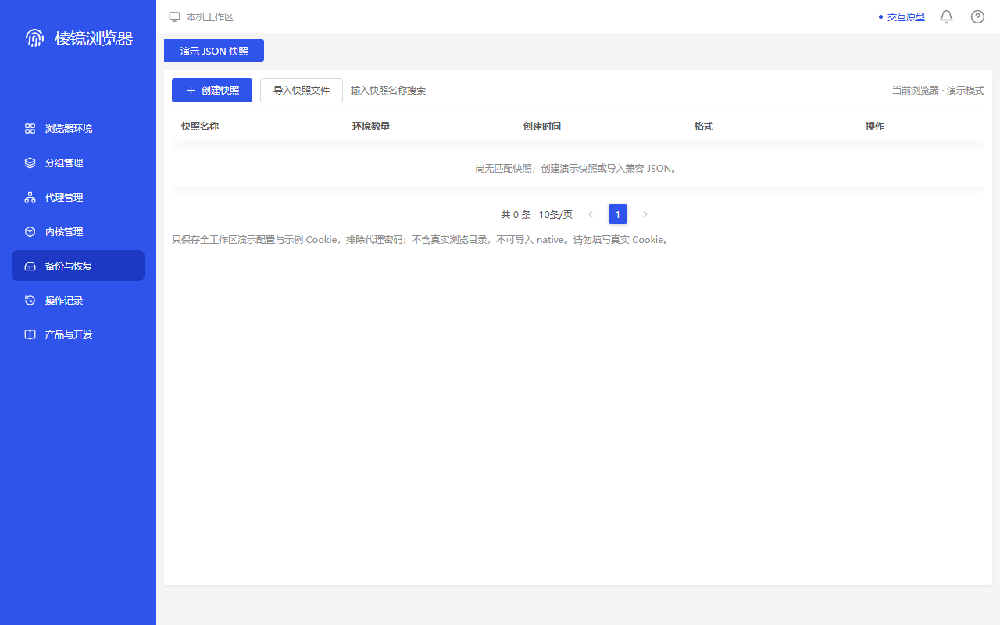
5f64361b8b631faa57ef84d078d5d4e615ede2524420f2467a5813aa4bcaaae9
MAPPED — 非匹配搜索及焦点边框、空正文、零结果分页和能力说明完整，无横向裁切；保存原快照为1。相同仅empty-body，不说明全页/toolbar/search等价或快照删除。原代理列表容器映射，不认证恢复、备份完整性或原生能力。
同类参考容器：proxy-list；不是同名原商业执行。
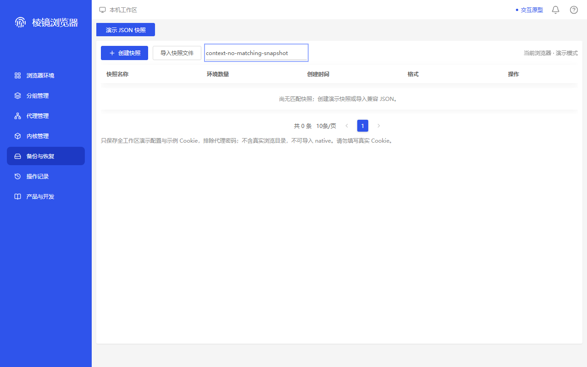
ea7d226b66dc33517d3537591addcdc53464c5f6fa15730d3763e117bdc6e3f0
MAPPED — 1280下已发布备份选中、未选导出任务、空搜索、真正零已发布记录与完整分页/本机包说明可读。不是导出任务空态；没有导出、发布或恢复执行。原代理列表仅容器映射，不以native标签或零getter宣称真实能力。
同类参考容器：proxy-list；不是同名原商业执行。
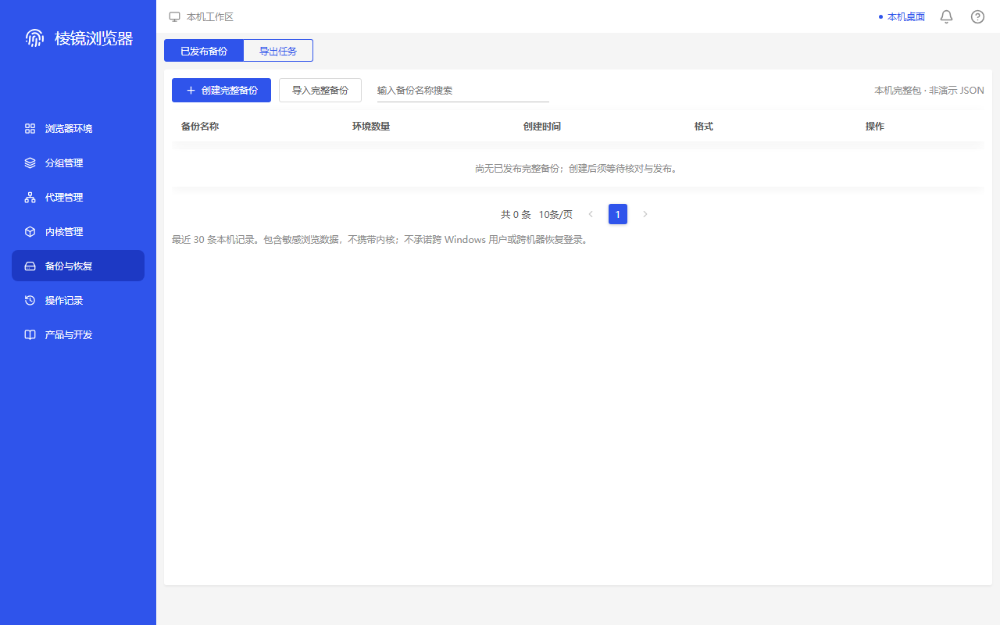
2dfa7cee89b74e02b5ac059933408a226eabeb4f0e0fa46999e71f45347106c1
MAPPED — 一条原合成普通记录、空搜索/全部结果、未确认完成标签、未打开的诊断入口与完整分页均可读，无遮挡；48px行/10px间隔保留。仅普通列表顶部，非密集末页或诊断尾部；原日志容器映射，不证明真实执行或记录已确认完成。
同类参考容器：activity-list；不是同名原商业执行。
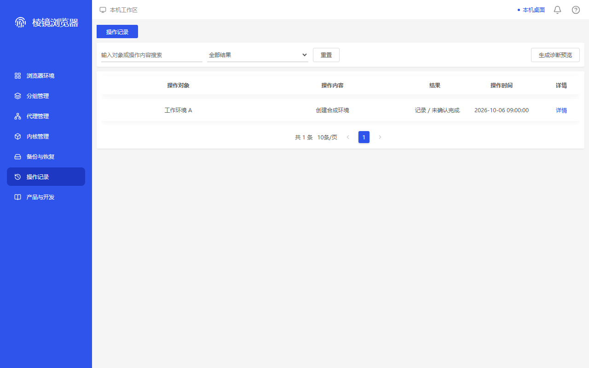
632e3a7fa87624044b568ac051fb1f1bce82168a604cbe3f33a3b92784900131
MAPPED — 一次绿色环境列表已刷新提示及关闭控件可读；短暂覆盖首工具条，普通行与页脚保留。表体顶部0/590/482仅首八行完整，分页仍标正在读取；不作密集底部/最终读取证明。原环境容器映射；错误提示共用分组mixed，不是Windows通知或全提示验收。
同类参考容器：environment-list；不是同名原商业执行。
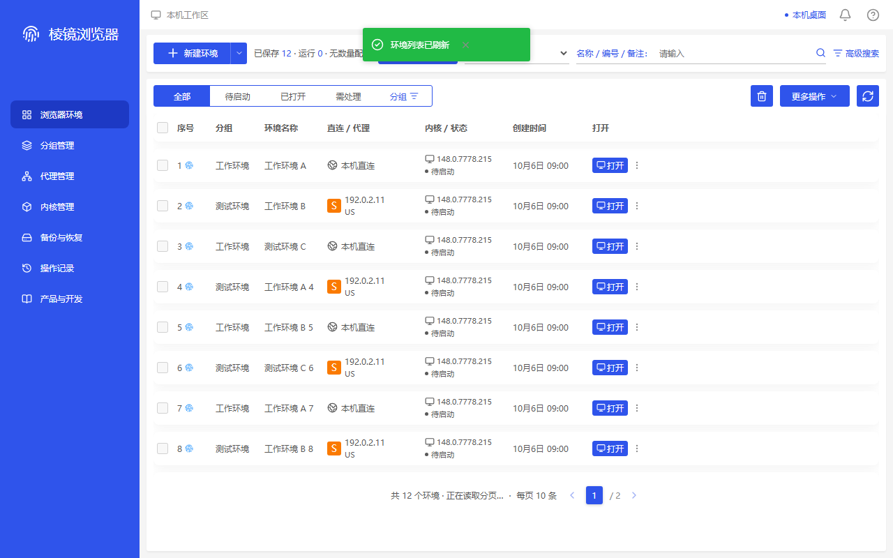
356ca11e39f0795a9336353697900407d91105a357de5d06d503b17f61933da0